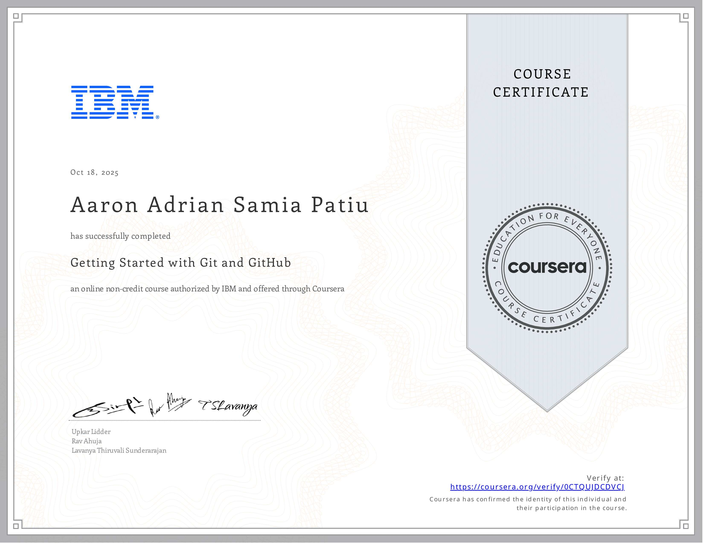
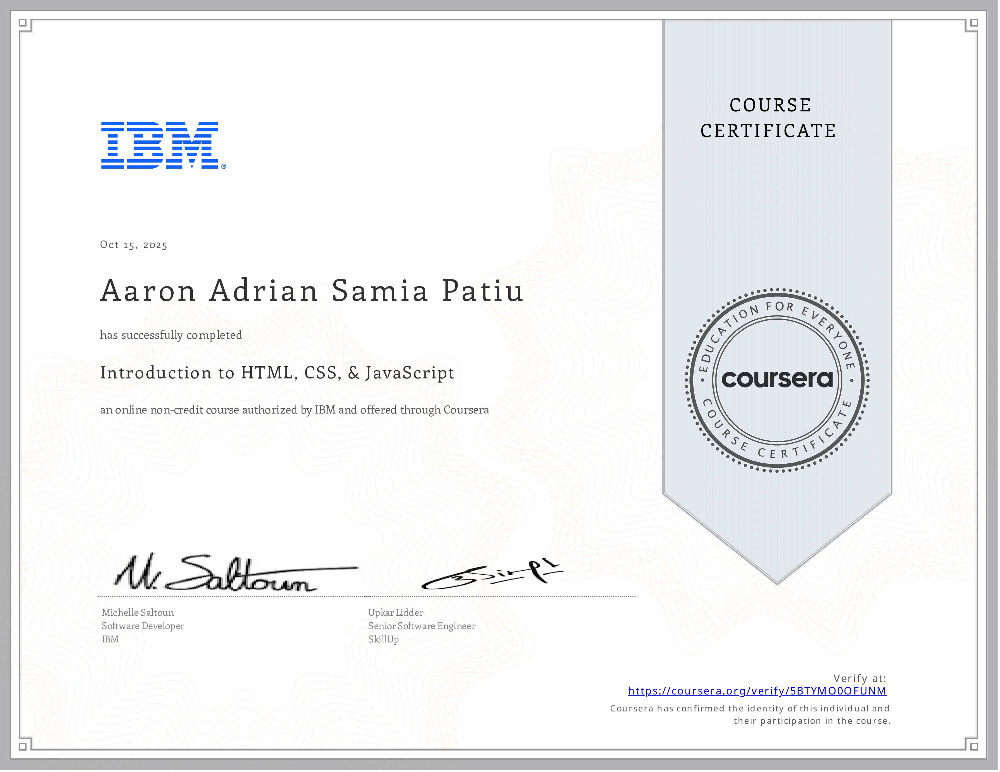
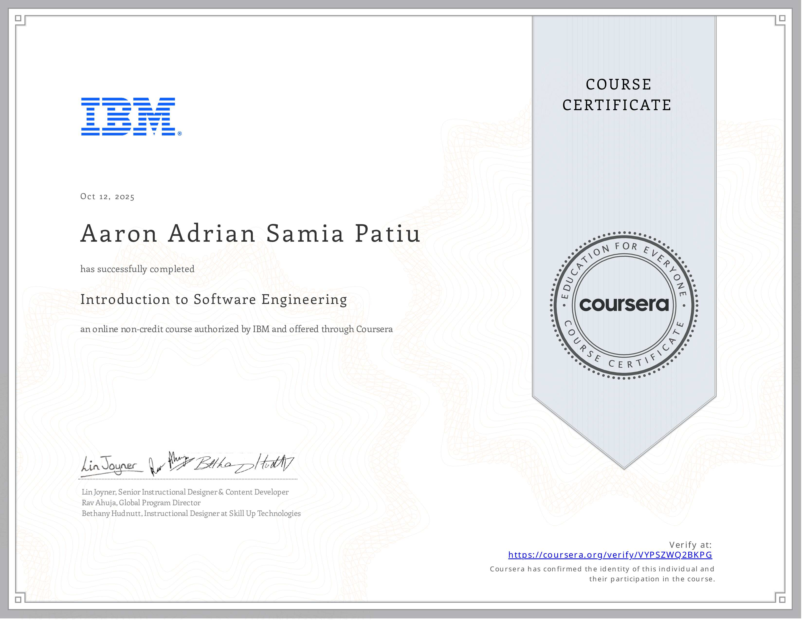
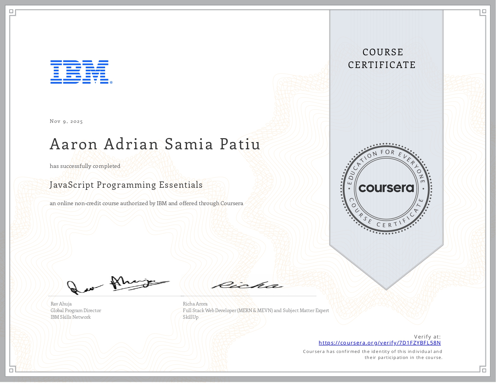

Hi, I'm Aaron Adrian Patiu!
A web developer passionate about building dynamic and responsive web applications. Experienced with the MERN stack and eager to learn and grow in the field of technology. Dedicated to creating efficient and user-friendly projects while continuously improving skills.
Skills

HTML
CSS
JavaScript
Node.js
PHP
Certificates




Work Experience
Department of the Interior and Local Government (DILG) - Regional Office III
Feb. 2025 – May 2025
IT Intern (On the Job Training)
- Posted bid notices and announcements on the official DILG website using Joomla Content Management System (CMS).
- Developed a Google Sheets-based tracking system with automated printable forms for efficient data monitoring and reporting.
- Assisted in troubleshooting computers, printers, and network devices within the regional office.
- Conducted regular preventive maintenance on computers, including software updates, virus scans, and basic hardware checks.
Projects
Thesis Management System
- Developed and deployed a Thesis website integrated with chatbot for thesis project using MERN Stack
Real Estate Website
- Created a Real Estate website using HTML, CSS, JavaScript
Recommendations
“
Aaron is a dedicated and quick learner. During our collaboration on
a web project, they demonstrated strong problem-solving skills and
an impressive understanding of front-end technologies.
”
“
Working with Aaron was a great experience. They always took
initiative in optimizing code performance and writing clean,
efficient JavaScript for our development team.
”
“
I was impressed by Aaron's ability to adapt to new frameworks
quickly. Their attention to detail and enthusiasm for full-stack
development make them a valuable team member.
”